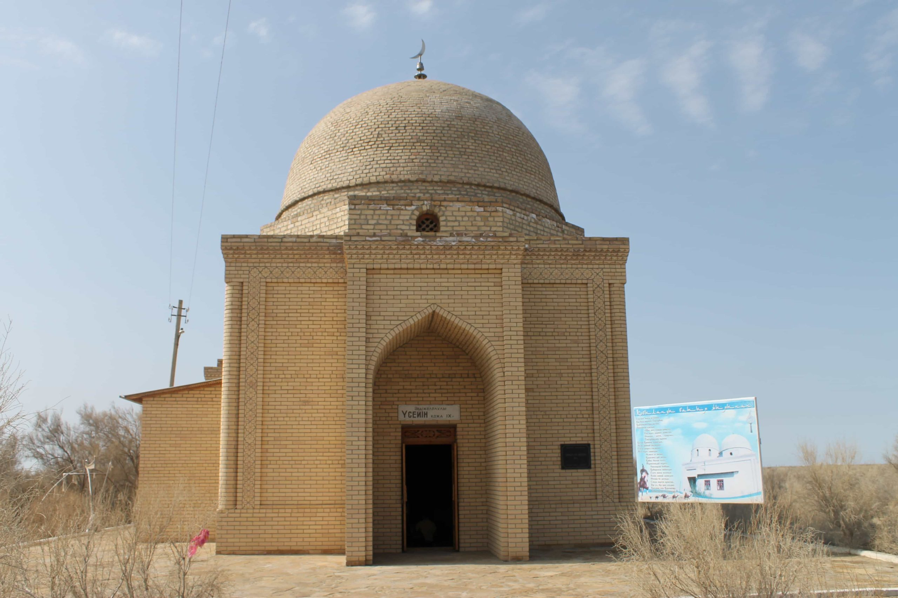

Во многих письменных источниках есть сведения о привлекательности Сарыарки для казахов. Конечно, кочевое население всегда стремилось контролировать города на маршрутах Шелкового пути. Но пребывание ханов и народа в крупных южных городах Сыганак, Сауран и Яссы не было постоянным. Во всем мире не было приятнее для кочевника мест, чем Сарыарка. Потомки Джучи-хана с легкостью кочевали по территории всей Средней Азии, а в Приишимье были места их любимых кочевок. Северная Сарыарка стала доменом кочевого государства, местом, где народ набирался духовных и физических сил.

Мавзолей Ботагай – один из наиболее величественных памятников средневекового периода степной Сарыарки. Расположен он в низовьях реки Нуры, в 2 км к востоку от поселка Коргалжын, в 1 км от русла реки.
Средневековый объект под названием «городище Ботагай (Бытыгай)» упоминается в путевых записках, в трудах дореволюционных топографов и историков. Первое описание было сделано Петром Рычковым (1762 год) в его знаменитом труде, посвященном Оренбургскому краю, и затем повторяется у Левшина, Уалиханова. Сам Рычков в Центральном Казахстане не был, памятники этого района были описаны им по материалам предшествующих экспедиций.
Одним из самых известных описаний Ботагая является заметка инженера Ивана Шангина, опубликованная в 1820 году. Он описал большое количество архитектурных сооружений в долине реки Нуры. В частности, про мавзолей Ботагай автор сообщил: «Оно построено из кирпича; внутри его находятся столбы, покрытые алебастровой штукатуркой, равно как и стены, имеющие вместо связей четырехугольные сосновые брусья в два вершка в поперечнике, для большей прочности, обожженные и покрытые камышом».
Мавзолей был принят Шангиным за развалины городского храма, а окрестный некрополь – за руины древнего города. Эта мысль вызвала волну интереса у исследователей, пытавшихся найти загадочный город.
Работы в этом месте проводила Центрально-Казахстанская археологическая экспедиция под руководством Алькея Маргулана в 1947 и 1949 годах ХХ века. Никаких свидетельств существования древнего города, за исключением небольших поселений и обширных гробниц, тогда обнаружено не было.
Тем не менее Алькей Маргулан предполагал на месте городища Батагай существование таинственного города Aqcxint – Акша-Кент, отмеченного на средневековых итальянских картах, в частности на карте Пицигани, а также на Каталонской карте. Этот город показан как торговый центр на караванных путях из Сарайчика в Алмалык, через Тургайские и Сарысуйские степи.